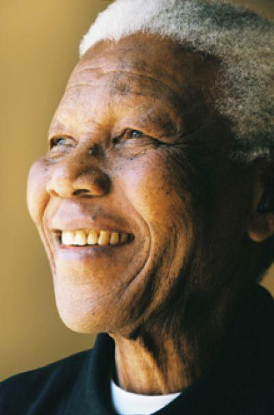

Menurut (Nelson Mandala) “Pendidikan adalah senjata paling ampuh yang dapat anda gunakn untuk mengubah dunia”. Menunjukkan bahwa pendidikan memiliki kekuatan besar untuk membawa perubahan. Dengan pendidikan, seseorang dapat memperoleh pengetahuan, pola pikir yang lebih baik, serta kemampuan untuk memperbaiki kehidupan diri sendiri maupun masyarakat.